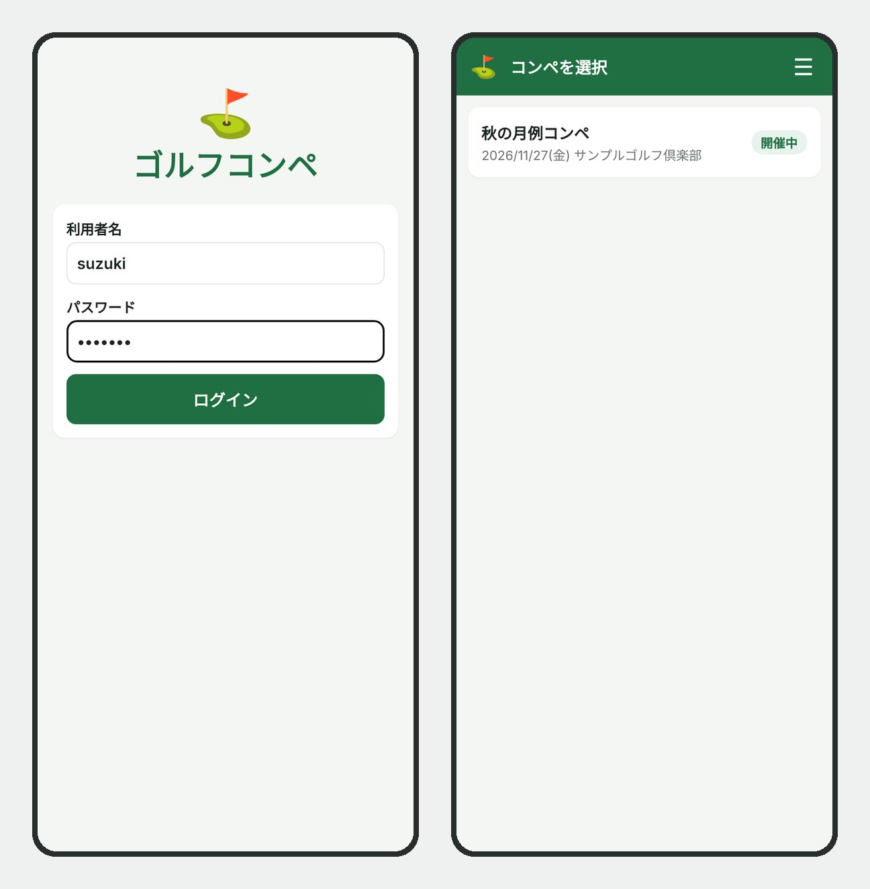
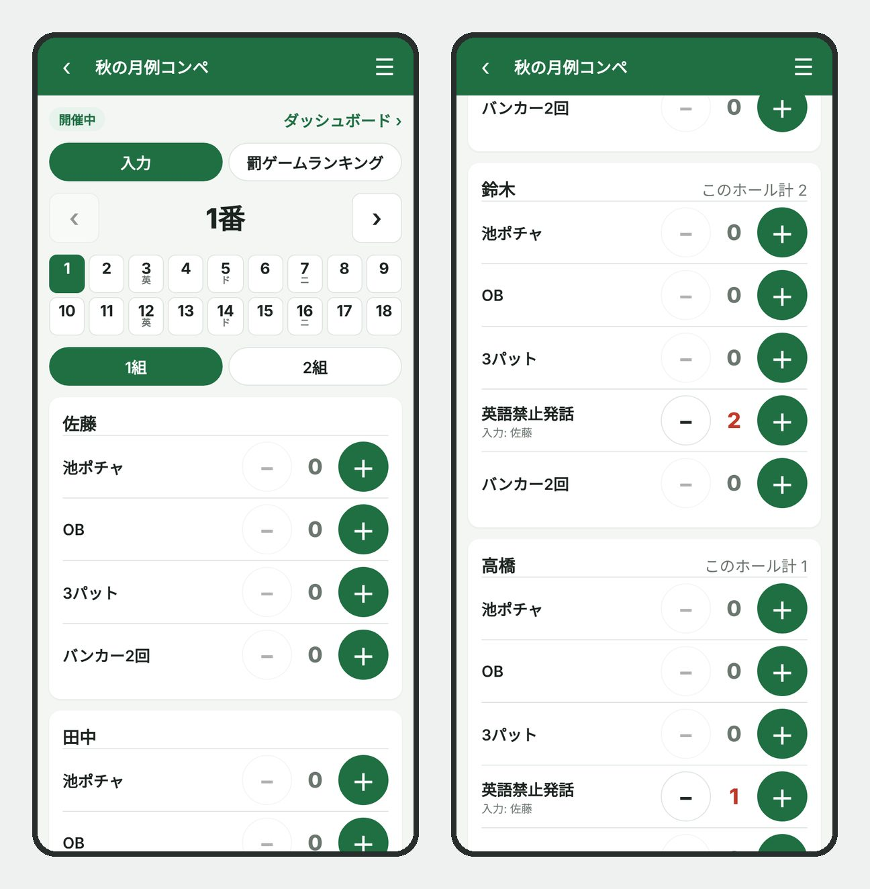
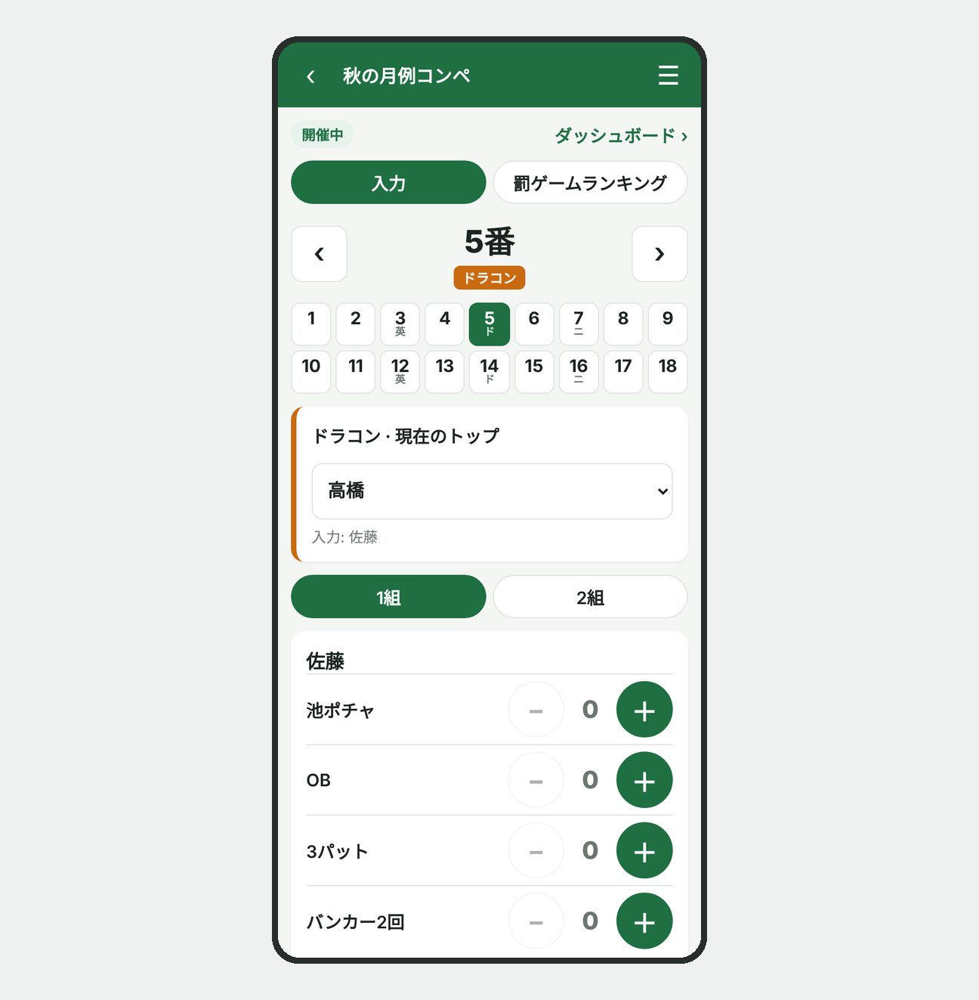
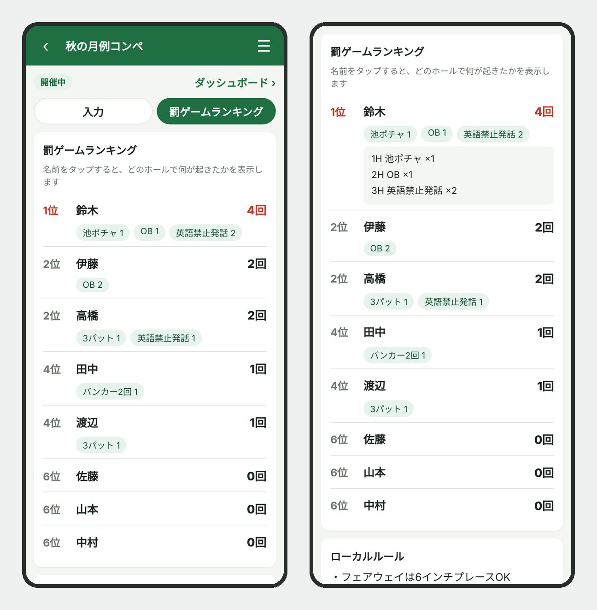
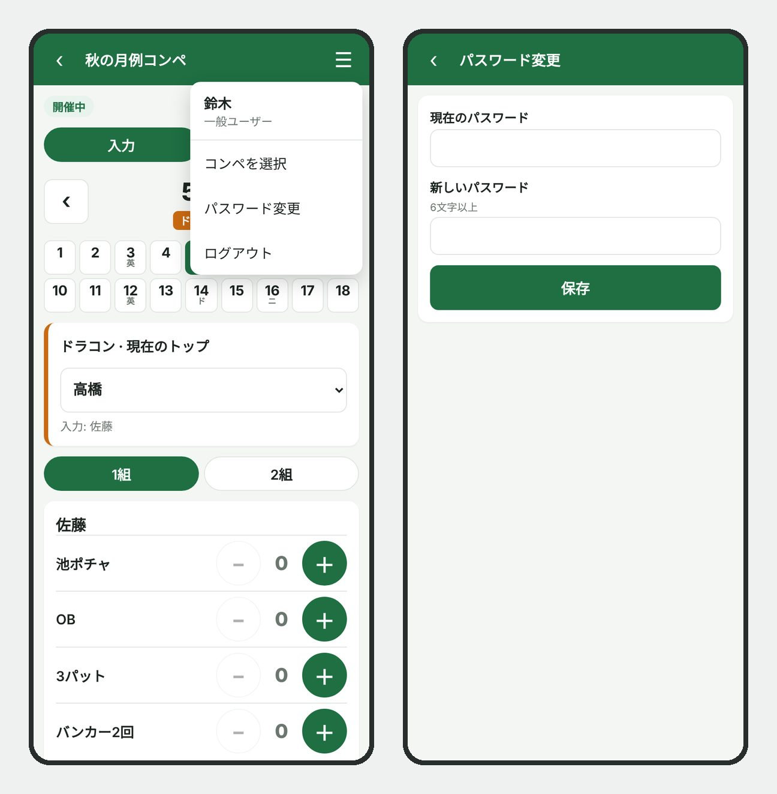
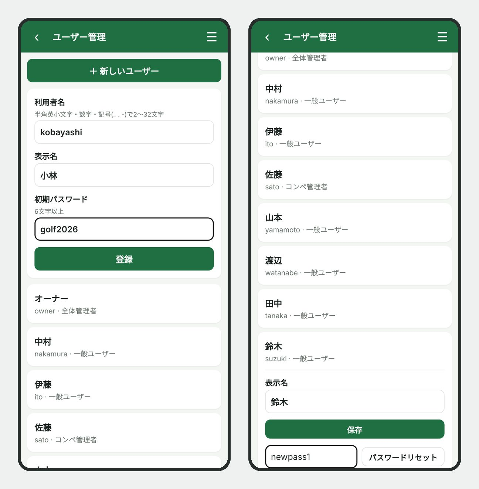
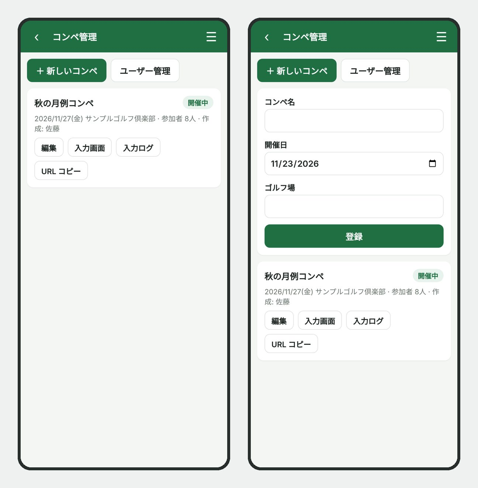
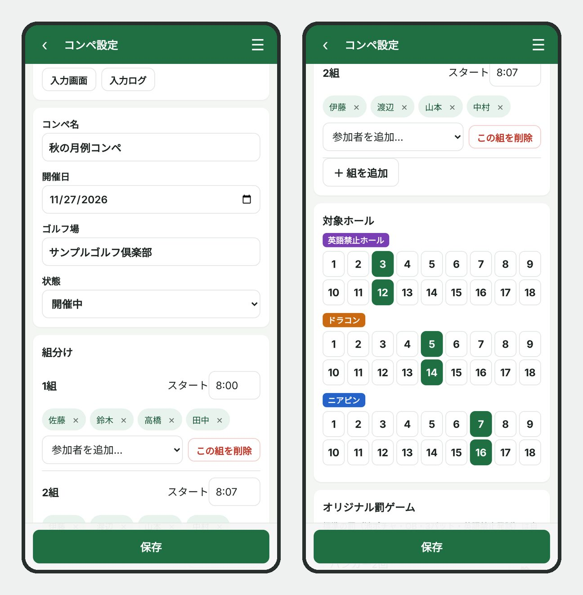
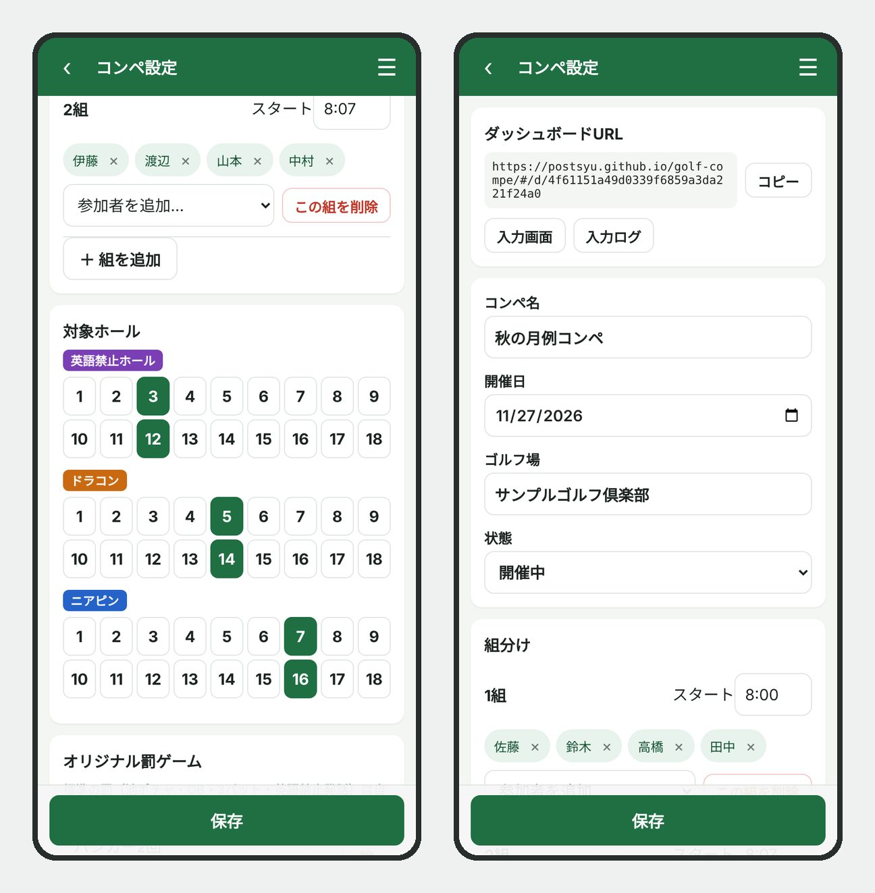
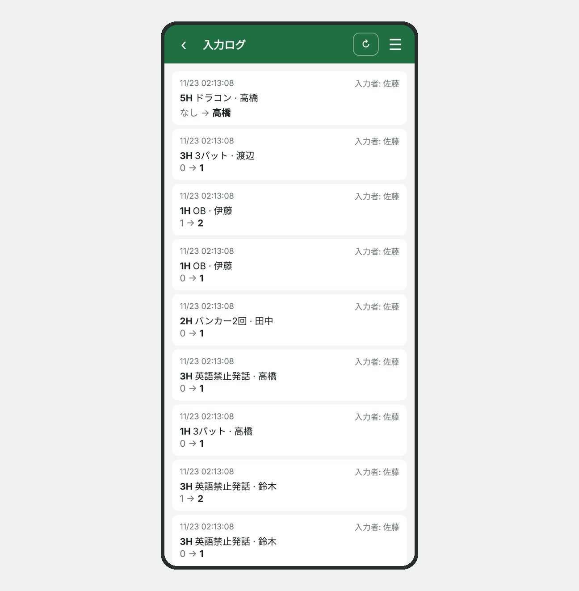

ゴルフコンペアプリ 利用マニュアル（参加者・コンペ管理者）
はじめに
コンペ中の罰ゲーム（池ポチャ・OB・3パット・英語禁止の発話など）と、ドラコン・ニアピンの「今のトップ」をスマホで記録し、全員で同じ画面を見られるアプリです。スコアや順位の計算は扱いません。
- アプリのURL：https://postsyu.github.io/golf-compe/
- 使うもの：スマホのブラウザ（iPhoneはSafari、AndroidはChrome）。アプリのインストールは不要です
- 入力した内容は、他の人の画面にも数秒で反映されます
| あなたの役割 | 読むところ |
|---|---|
| 参加者（一般ユーザー） | 第1部 |
| コンペ管理者（幹事） | 第1部と第2部 |
| ダッシュボードを見るだけの人 | 「ランキングとダッシュボード」の節だけ |
第1部 参加者向け
ログインしてコンペを開く
幹事から伝えられた利用者名とパスワードでログインします。1度ログインすれば、30日間は入力し直す必要はありません。
- アプリのURLを開きます。
- 「利用者名」と「パスワード」を入力して、「ログイン」を押します。
- 参加中のコンペが表示されるので、使うコンペを押します。参加中のコンペが1件だけなら、ログインするとそのまま入力画面が開きます。
表示されるのは「準備中」か「開催中」のコンペだけです。自分のコンペが見当たらないときは、幹事に参加者として登録されているか確認してください。
ホーム画面に追加しておくと便利です。 iPhoneはSafariの共有ボタンから「ホーム画面に追加」、AndroidはChromeの「⋮」メニューから「ホーム画面に追加」を選びます。

左：ログイン画面 右：コンペ選択画面
罰ゲームを入力する
入力は「ホールを選ぶ → 組を選ぶ → ＋を押す」の3つだけです。罰はホールごとに記録され、あとで「何番ホールで何があったか」を確認できます。
- ホールを選ぶ：画面上部の「‹」「›」で前後のホールに移ります。1〜18の番号を押すと、そのホールに直接移れます。番号の下の小さな文字は、「英」＝英語禁止ホール、「ド」＝ドラコン、「ニ」＝ニアピンの対象ホールです。
- 組を選ぶ：最初は自分の組が表示されます。他の組を入力するときだけ、「1組」「2組」のボタンで切り替えます。
- 回数を記録する：罰を受けた人の欄で、該当する罰の「＋」を押します。2回なら2回押します。回数が1以上になると数字が赤くなり、入力した人の名前が小さく表示されます。
間違えたときは、そのホールに戻って「−」を押します。過去のホールもいつでも直せます。入力と修正はすべて記録に残り、幹事があとから確認できます。
英語禁止ホールでは、紫色の「英語禁止ホール」の印が出て、「英語禁止発話」の欄が現れます。英語を話した回数だけ「＋」を押します。他のホールではこの欄は表示されません。
入力する人は組で1人に決めてください。 同じ組の2人が同じ池ポチャをそれぞれ「＋」すると、2回と数えられてしまいます。他の人の入力は数秒で自分の画面にも反映されるので、押す前に数字を確認すると安心です。

左：入力画面（1番ホール） 右：英語禁止ホールでの入力（回数が赤くなり、入力した人が表示される）
ドラコン・ニアピンを更新する
対象ホールでは、画面上部に「ドラコン・現在のトップ」または「ニアピン・現在のトップ」の欄が出ます。距離は記録せず、「今のトップは誰か」だけを更新します。
- 欄を押して、今のトップの人を選びます。後の組の人が記録を更新したら、その人に変えます。
- 取り消すときは「なし」を選びます。
全組の参加者から選べるので、自分の組以外の人も選べます。

ドラコン対象ホールの「現在のトップ」
ランキングとダッシュボード
罰ゲームランキングは、すべての罰（オリジナル罰と英語禁止の発話も含む）の合計回数が多い順に並びます。同じ回数の人は同じ順位です。
見られる場所は2つあります。
| 場所 | 開き方 | ログイン |
|---|---|---|
| 入力画面の「罰ゲームランキング」タブ | 入力画面の上部でタブを切り替える | 必要 |
| ダッシュボード | 幹事が共有した専用URLを開く。入力画面右上の「ダッシュボード ›」からも開ける | 不要 |
ダッシュボードには、上から「ドラコン・ニアピンの現在のトップ」「罰ゲームランキング」「ローカルルール」が並びます。右上の「ログインして入力」（ログイン中は「入力画面へ」）を押すと、入力画面に移れます。
- 画面は数秒おきに自動で更新されます。上部の「自動更新中・最終更新」で、最後に確認した時刻がわかります。
- 名前を押すと、「1H OB ×1」のように、どのホールで何があったかが表示されます。
- ドラコン・ニアピンはホールごとに今のトップが表示されます。まだ誰もいなければ「未定」と出ます。
- ダッシュボードは開催日の30日後まで見られます。それ以降は「公開期間が終了しました」と表示されます。

左：入力画面の「罰ゲームランキング」タブ 右：ダッシュボード（名前を押すと内訳が出る）
ローカルルールを確認する
入力画面とダッシュボードの最下部に、幹事が登録したローカルルールが表示されます。プレー中に迷ったら、画面を一番下までスクロールしてください。
パスワードの変更とログアウト
画面右上の「☰」を押すとメニューが開きます。
- パスワード変更：現在のパスワードと新しいパスワード（6文字以上）を入力して「保存」を押します。初期パスワードのままなら、最初に変えておくと安心です。
- ログアウト：他の人のスマホを借りてログインしたときは、使い終わったらログアウトしてください。
- コンペを選択：参加中のコンペ一覧に戻ります。

左：☰メニュー 右：パスワード変更
困ったとき
| こんなとき | どうするか |
|---|---|
| 「利用者名またはパスワードが違います」と出る | 利用者名は半角の英小文字です。大文字や全角になっていないか確認してください。わからなければ幹事にパスワードのリセットを頼んでください |
| 「15分間ロックしています」と出る | ログインに10回続けて失敗すると、15分間ログインできなくなります。15分待つか、幹事にパスワードのリセットを頼んでください |
| 「通信できませんでした」と出る | 電波が弱い場所です。その入力は記録されていません。電波の良い場所で数字を確かめて、もう一度入力してください |
| ログイン画面に戻された | ログインの有効期限（30日）が切れたか、幹事がパスワードをリセットしました。もう一度ログインしてください |
| 「このコンペは終了しました」と出て入力できない | 幹事がコンペを終了にしました。記録を直したいときは幹事に伝えてください |
| 参加中のコンペが表示されない | 参加者として登録されていないか、コンペが終了しています。幹事に確認してください |
| 他の人の入力が反映されない | 数秒待つと反映されます。変わらなければ、ブラウザの再読み込みをしてください |
| 「この組には参加者がいません」と出る | 組のボタンで別の組を選んでください |
第2部 コンペ管理者向け
コンペ管理者（幹事）は、参加者の登録からコンペの設定、当日の運用までを担当します。編集できるのは自分が作ったコンペだけです。管理するコンペに自分もプレーヤーとして参加できます。
管理画面は、画面右上の「☰」→「管理メニュー」で開きます。コンペの入力画面からは、右上の「管理」でそのコンペの設定に直接移れます。
参加者を登録する
参加者には一人ずつアカウントが必要です。一度登録すれば、次回以降のコンペでも同じアカウントを使えます。
- 「管理メニュー」→「ユーザー管理」を開きます。
- 「＋ 新しいユーザー」を押して、次の3つを入力します。
- 利用者名：ログインに使うID。半角英小文字・数字・記号（_ . -）で2〜32文字。苗字のローマ字（例：suzuki）にすると覚えやすく、同じ苗字がいるときは suzuki.k のように区別します
- 表示名：画面やランキングに出る名前（例：鈴木）
- 初期パスワード：6文字以上
- 「登録」を押します。
- 本人に「アプリのURL」「利用者名」「初期パスワード」を伝え、ログイン後にパスワードを変更してもらいます。クイックガイドも一緒に送ると親切です。
登録済みの人の名前を押すと、表示名を変更できます。コンペ管理者を登録できるのは全体管理者だけです。
パスワードをリセットする
参加者がパスワードを忘れたときや、ロックされたときに使います。メールによる再設定はないので、幹事が対応します。
- 「ユーザー管理」で、その人の名前を押します。
- 「新しいパスワード」に6文字以上を入力し、「パスワードリセット」を押します。
- 新しいパスワードを本人に伝えます。
リセットするとロックも解除されます。その人が他の端末でログインしていた場合は、自動でログアウトされます。

左：新しいユーザーの登録 右：パスワードリセット
コンペを作る
- 「管理メニュー」で「＋ 新しいコンペ」を押します。
- 「コンペ名」「開催日」「ゴルフ場」を入力して「登録」を押します。
- そのまま「コンペ設定」画面が開きます。続けて設定します。
開催日は、ダッシュボードの公開期限（開催日の30日後）の基準になります。

左：管理メニューのコンペ一覧 右：新しいコンペの登録
コンペを設定する
「コンペ設定」画面で下の項目を決め、最後に画面下の「保存」を押します。保存を押すまでは、どの変更も反映されません。 あとから何度でも変更できます。
| 項目 | 設定方法 |
|---|---|
| コンペ名・開催日・ゴルフ場 | 登録時の内容を直せます |
| 状態 | 「準備中」「開催中」「終了」。切り替えるタイミングは「当日の運用」を参照 |
| 組分け | 「＋ 組を追加」で組を作り、「参加者を追加…」から登録済みの人を選びます。名前の「×」で外せます。スタート時刻は空欄でも構いません。組に入った人が、そのコンペの参加者になります |
| 対象ホール | 「英語禁止ホール」「ドラコン」「ニアピン」それぞれで、1〜18の番号を押して選びます。緑色になった番号が対象です。複数選べます |
| オリジナル罰ゲーム | 「＋ 罰ゲームを追加」で名前を入力します（例：バンカー2回）。池ポチャ・OB・3パット・英語禁止発話は標準で入っているので、追加は不要です |
| ローカルルール | 自由に入力できます。改行もそのまま表示されます |
- 同じ人を2つの組に入れることはできません。
- 組を削除すると、その組の人は参加者から外れます。ただし、その人の記録は消えません。
- 記録があるオリジナル罰を削除すると、その記録も消えます。 削除前に確認画面が出ます。名前を変えるだけなら記録は残ります。

左：組分け 右：対象ホール（緑色の番号が対象）
ダッシュボードのURLを共有する
コンペを登録すると、そのコンペ専用のダッシュボードURLが自動で作られます。URLを知っていれば、ログインなしで誰でも見られます。
- 「コンペ設定」画面いちばん上の「ダッシュボードURL」で「コピー」を押します。管理メニューのコンペ一覧にある「URL コピー」でも同じです。
- LINEのグループなどに貼り付けて共有します。
URLは推測されにくい文字列ですが、入手した人は誰でも見られます。メンバー以外への転送は控えてもらってください。

左：オリジナル罰ゲームとローカルルール 右：ダッシュボードURL（画面いちばん上）
当日の運用
コンペの状態は、幹事が手動で切り替えます。自動では変わりません。
| 状態 | 使う時期 | 参加者の画面 | 入力 |
|---|---|---|---|
| 準備中 | 登録してから当日の朝まで | コンペ一覧に表示される | できる |
| 開催中 | 当日のスタート前から表彰まで | コンペ一覧に表示される | できる |
| 終了 | 表彰が終わったら | コンペ一覧から消える | できない |
当日の流れは次のとおりです。
- 前日まで：参加者全員がログインできるか確認してもらいます。ダッシュボードのURLも共有しておきます。
- スタート前：状態を「開催中」にして保存します。各組で入力する人を1人決めてもらいます。
- プレー中：入力は各組に任せます。幹事はダッシュボードで状況を確認できます。
- 表彰前：入力ログでおかしな記録がないか確認します。
- 表彰後：状態を「終了」にして保存します。保存前に確認画面が出ます。
終了後に記録を直したいときは、状態を一度「開催中」に戻して直し、もう一度「終了」にします。
入力ログで記録を確認する
罰ゲームとドラコン・ニアピンの入力と修正は、すべて入力ログに残ります。見られるのは、そのコンペのコンペ管理者と全体管理者だけです。
- 管理メニューのコンペ一覧、または「コンペ設定」画面で「入力ログ」を押します。
- 新しい順に「日時・入力者・ホール・内容・対象者・変更前→変更後」が並びます。右上の「↻」で最新の内容に更新できます。
- 二重に入力された記録を見つけたら、入力画面でそのホールを開いて「−」で直します。

入力ログ（新しい順）
終了後について
- ダッシュボードは、開催日の30日後を過ぎると自動で見られなくなります。
- 記録は削除されずに残ります。管理メニューからは、引き続き入力画面と入力ログを開けます。
- 次回のコンペは、新しく作成します。参加者のアカウントはそのまま使えます。
付録
役割ごとにできること
| 操作 | 一般ユーザー | コンペ管理者 | 全体管理者 | URLを知っている人 |
|---|---|---|---|---|
| 罰ゲーム・ドラコン・ニアピンの入力と修正 | ○（参加コンペ） | ○ | ○ | × |
| ダッシュボードの閲覧 | ○ | ○ | ○ | ○（開催日の30日後まで） |
| 自分のパスワード変更 | ○ | ○ | ○ | × |
| 一般ユーザーの登録・パスワードリセット | × | ○ | ○ | × |
| コンペの作成 | × | ○ | ○ | × |
| コンペの設定・状態変更・入力ログ閲覧 | × | 自分が作ったコンペ | 全コンペ | × |
| コンペ管理者の登録・停止 | × | × | ○ | × |
用語集
| 用語 | 意味 |
|---|---|
| 利用者名 | ログインに使う半角英数字のID。画面に出る名前は「表示名」 |
| 組 | 一緒に回るパーティ。入力画面は組ごとに表示される |
| 対象ホール | 英語禁止・ドラコン・ニアピンを行うホール。コンペごとに幹事が決める |
| 標準の罰 | 池ポチャ・OB・3パット・英語禁止発話。全コンペ共通 |
| オリジナル罰ゲーム | コンペごとに幹事が追加する罰 |
| 現在のトップ | ドラコン・ニアピンで、今いちばん良い記録の人 |
| ダッシュボード | ログインなしで見られる、コンペごとの状況画面 |
| 状態 | 準備中・開催中・終了。終了にすると入力できなくなる |
| 入力ログ | 誰がいつ何を入力・修正したかの記録 |